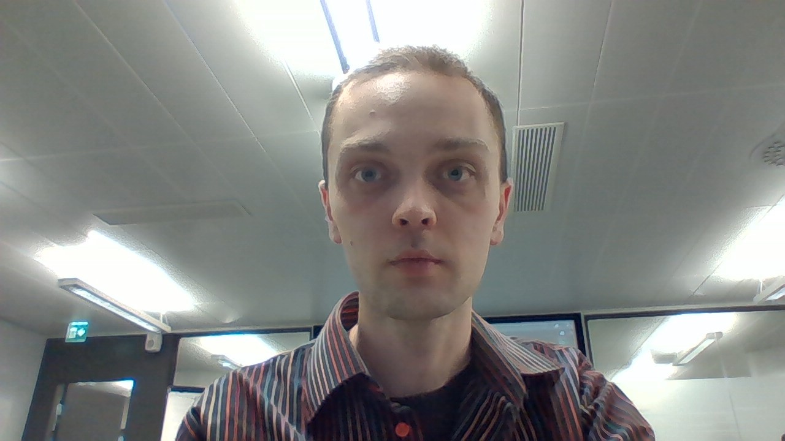
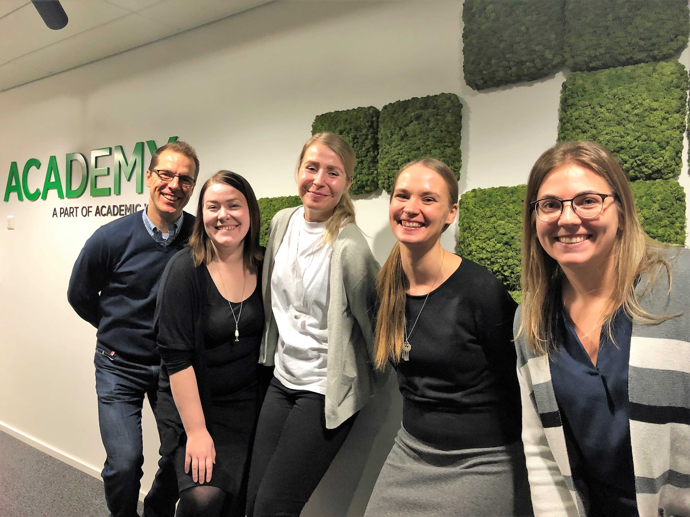

Academyssa opit koodaamaan 12 viikossa ja saat vakituisen työpaikan IT-alalta.
Tämän koulutuksen pääpaino on JavaScript -kielessä sekä sen frameworkeissa,
joilla pystytään toteuttamaan toiminnallisia osioita eri verkkopalveluissa.
Front end–teknologioiden lisäksi kurssilla käymme myös tietokantoja,
johdatuksen pilvipalveluihin sekä palvelin (back end) puolta. Koulutus tarjoaa
hyvän pohjan erilaisiin IT –alan junior tason tehtäviin ja tarjoaa useita
erilaisia polkuja tulevaisuuden uralle. Koulutuksen jälkeen kykenetkin
työskentelemään niin junior front end, back end kuin fullstack tehtävissä ja
tekemään kaikkea mobiilipeleistä liiketoiminnallisiin järjestelmiin.

Nimi: Anssi "Observant Owl" Forsman
Tausta: Tradenomi ja koulutettu hieroja. Työtaustaa löytyy teleoperaattoreiden asiakaspalvelu-
ja myyntitöistä ja urheilukaupasta. Vapaa-ajalla harrastan tennistä, hiihtoa ja pyöräilyä.
Secret Talent: Hot Dog -lyönti
Vaikeinta:
- Nodejs
- Javascript funktiot
Nimi: Janne "Curious Cat" Kokki
Tausta: Palvelujohtamisen KTM, työtausta kansainvälisesti IT-ratkasumyynnistä. Viimeisimpänä
digitaalisen markkinoinnin työkaluja Hong Kongissa. Vapaa-ajalla pelaan salibandya ja käyn
salilla.
Secret talent: Teen aika hyvää lasagnee
Vaikeinta:
- Node.js
- Time management
- TypeScript
Nimi: Olli "Gregarious Giraffe" Brummer
Tausta: Kulttuurialan akateemistaustainen sekatyömies
Secret talent: Oulun murre
Vaikeinta:
- Alkuun pääseminen projekteissa
- JavaScript koodin vianmääritys
- Kärsivällisyys yksityiskohtien viimeistelyssä

Hello world!
Olemme juuri aloittaneet Academyn
JavaScript opintomme.
Mitä on Accelerated Learning?
Accelerated Learning on nopea tie uuteen ammattiin aktiivisille ja kunnianhimoisille
ihmisille, joilla on kyky omaksua uutta tietoa tehokkaasti. Koulutusmalli
keskittyy
nopeatempoiseen käytännön oppimiseen aktiivisen tiimityöskentelyn ja jatkuvan
palautteenannon kautta. Koulutus perustuu konkreettisiin tehtäviin, jotka ovat
relevantteja tulevissa tehtävissä. Tämä tekee oppimisprosessista erittäin
tehokkaan ja
konsulttimme pystyvät työskentelemään junior IT-konsultin tehtävissä heti
ensimmäisestä
päivästä lähtien.
Alla lyhyt esittely ryhmämme jäsenistä:
Salainen taitoni on
porkkanakakun
teko. Haastavinta
ennakko-opinnoissa oli
ymmärtää
miten callbackit
toimii.
Satu Immonen
Innokkaasti uudelle uralle
lähtenyt
viestijä, tuleva
Javascript-velho.
Haasteita
aiheuttaa vielä event
handlerit
ja callbackit. Salainen
aseeni
on tarkka
oikolukeminen!
Sanna Launonen
Haasteena oli, että sitä
mukaa, kun
esiopinnoissa oppi
uuden
moduulin asiat,
edelliset
opitut asiat alkoivat
haihtua
mielestä - uutta tietoa
tuli
niin paljon. Salainen
kykyni on
löytää halpoja lentoja
hauskoihin kohteisiin.
Laura Muttilainen
Salainen taitoni: Google.
Haastavinta
ennakko-opinnoissa
oli ajan puute,
Node.js.
Riina Moilanen
IT-osaamista viime
vuosituhannelta
ja kaikki ne taidot
ovat
julkisia. :D Vaikeinta
oli
malttaa nukkua.